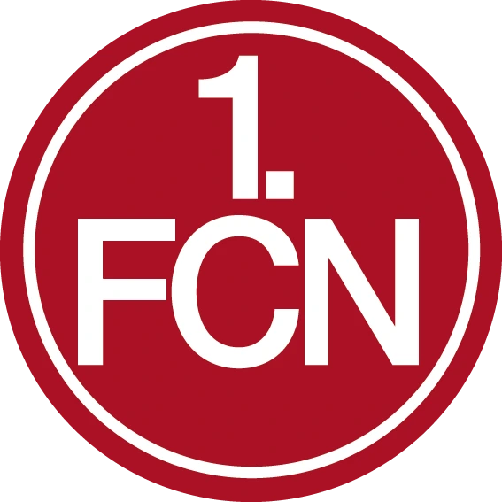

1. FC NürnbergBusiness Seating App.
Eine App, die den Spieltag im VIP-Bereich organisiert: Platzvergabe, Zutrittsberechtigungen und kurzfristige Änderungen – alles direkt auf dem Tablet.

- Branche
- Profifußball
- Leistung
- App-Entwicklung
- Im Einsatz
- Bei jedem Heimspiel
VIP-Betreuung am Spieltag
So schnell lassen sich auftretende Probleme am Spieltag lösen.
-
Die Ausgangslage
An jedem Heimspieltag empfängt der 1. FC Nürnberg hunderte Gäste im VIP-Bereich. Jeder Gast muss schnell seinen reservierten Platz finden, Zutrittsberechtigungen müssen geprüft werden – und kurzfristige Änderungen gehören zum Alltag. Ohne digitales Werkzeug kostet das Zeit und sorgt für Verwirrung.
-
Unsere Lösung
Eine mobile App, die an Spieltagen auf den Tablets des Vereins läuft: Gäste finden, Plätze zuweisen, Zutrittsberechtigungen auf einen Blick prüfen. Wichtige Ansprechpartner sind hinterlegt, damit bei Fragen sofort die richtige Person erreichbar ist – und Änderungen werden direkt vom Tablet aus erledigt.
-
Das Ergebnis
Ein reibungsloser Ablauf am Spieltag – ohne Zettelwirtschaft und ohne zusätzliche Geräte. Die Daten für kommende Spieltage verwaltet der Verein komplett selbst, auftretende Probleme werden in Minuten statt Stunden gelöst.
Was die App im Alltag leistet
-
Gästesuche & Platzzuweisung in Sekunden
-
Zutrittsberechtigungen auf einen Blick
-
Kurzfristige Änderungen direkt vom Tablet
-
Spieltagsdaten in Eigenregie verwalten
-
Hinterlegte Ansprechpartner für schnelle Lösungen
-
Keine zusätzlichen Geräte nötig
„Wir vom 1. FC Nürnberg sind sehr zufrieden über die Zusammenarbeit mit wesolve-IT. Durch die Zusammenarbeit sparen wir uns viel Zeit und die Arbeit wird deutlich einfacher. Auch die Zusammenarbeit mit Michael Reinert ist sehr gut. Er ist sehr zuverlässig und hilft sofort, falls es doch einmal Probleme geben sollte.“
Dein Projekt könnte das nächste sein.
Erzähl uns von deiner Idee. Im kostenlosen Erstgespräch klären wir, was sich für dein Team verbessern lässt.